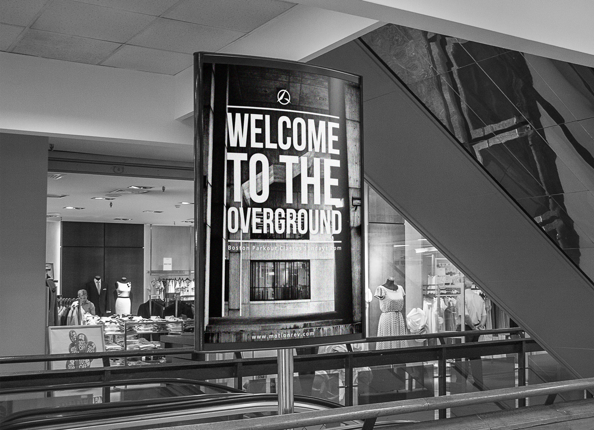
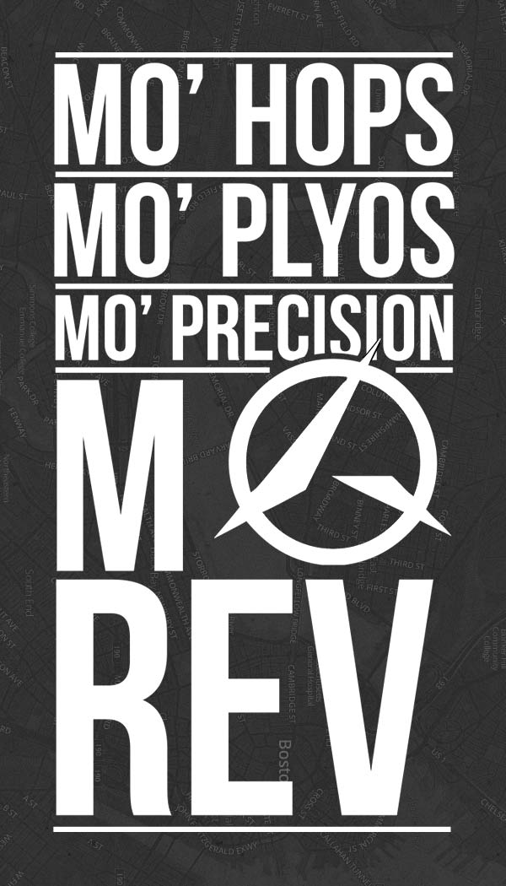
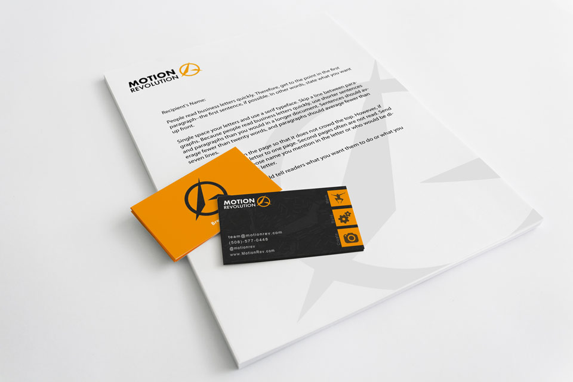
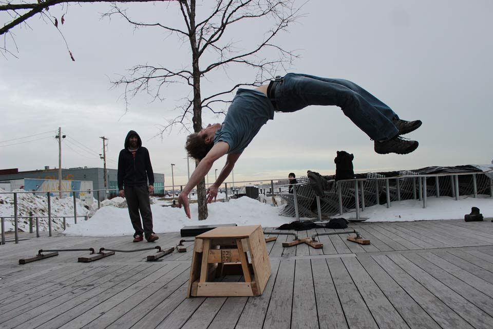
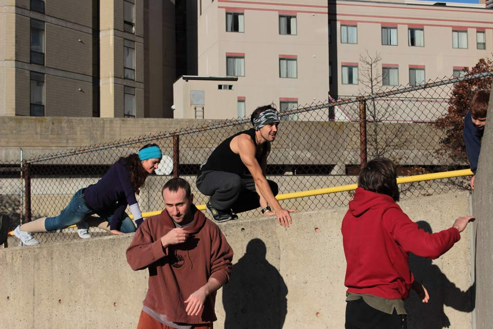

Break Free.
Motion Revolution (MoRev) was the collective mastermind of a team of entrepreneurs, traceurs, coaches, and artists with the intention of creating a safe haven for the Boston underground arts community. The project was originally founded by the UMass Parkour Group with the goal of opening a dedicated academy for Parkour practicioners, but as others joined the team (including myself) the idea slowly evolved into a non-profit interdiscplinary facility.
I was tasked with the design and marketing work (as well as coming up with witty slogans). Since our initial strategy was to offer free classes in the center of the city, I focused on bold typograhy juxtaposing some of my photos of Boston's brutalist architecture.
Our "Break Free" motto came to be shortly after we decided on a visual language. We wanted the brand to portray energy and discpline without being too rigid. By the time I had joined the team, the logo had already been chosen, representing the letter "R" in "Revolution" while symbolizing the human element through the Chinese character for "people":
We came to realize that short, catchphrase-like posters caught the most attention, and our visual style stuck, bringing along with it a unique Boston attitude:
 By mid 2013, we had created a recognizable new brand in the Boston athletic community, and riding on the momentum we had built for ourselves, we submitted our application to MassChallenge. While half the team took care of the submission process, myself and others connected with similar organizations like Girls LEAP for female self empowerment, HackFIT for a blend of innovation and fitness, and The Boston Calendar as one of the main contributors in getting our name out there.
Unfortunately, our bid for MassChallenge didn't make it past the judges, but the lessons we learned in creating a viable business model were invaluable. The project is currently on hold while the team pursues other professional opportunities, but I'm still thankful to have helped get MoRev to where it ended and I'm excited to see what is possible for the project in the future.
Movement classes we coached in the city:
  << Back to Home